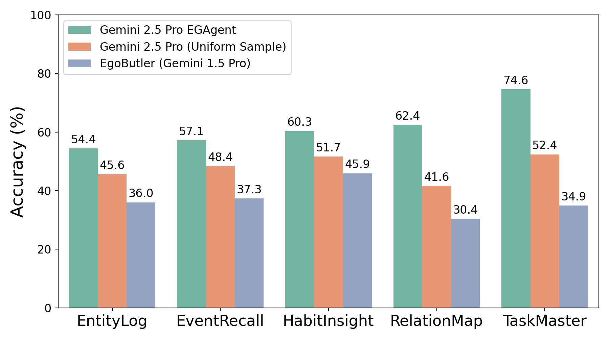
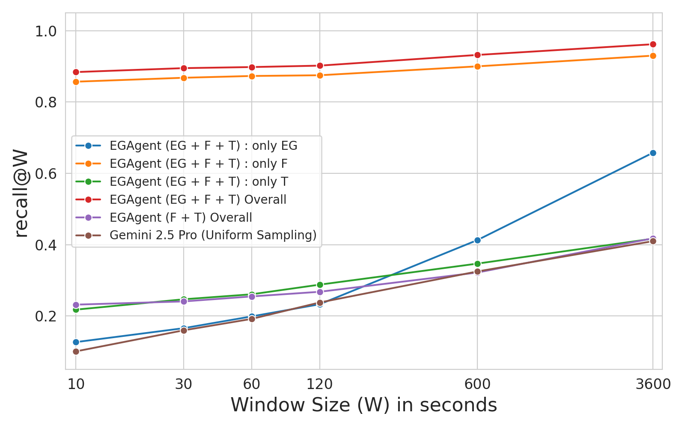
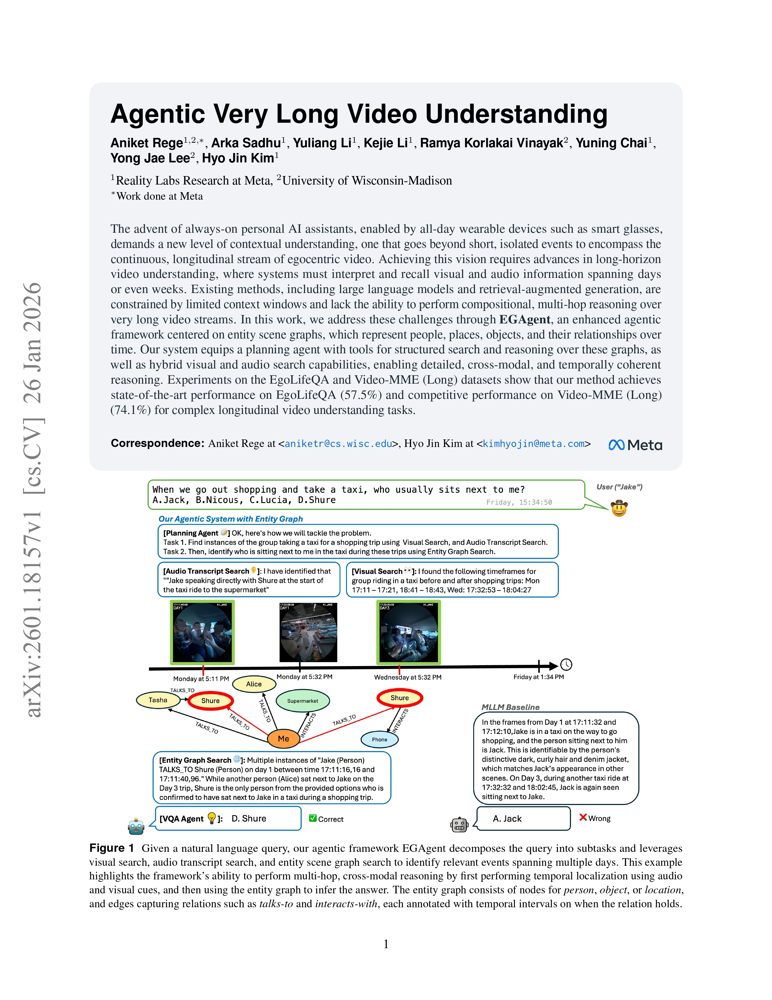

Agentic Very Long Video Understanding
| Aniket Rege1,2 | Arka Sadhu1 | Yuliang Li1 | Kejie Li1 | Ramya Korlakai Vinayak2 | Yuning Chai1 | Yong Jae Lee2 | Hyo Jin Kim1 |
| 1Reality Labs Research at Meta | 2University of Wisconsin–Madison |
|
|
|
|
Overview
| We propose EGAgent, an agentic framework for very long video understanding powered by temporally-annotated entity scene graphs, which allow for precise temporal localization of events and interactions bewteen entities across extremely long horizons (e.g. a week-long video, ~50 hours). Here we show an example of multi-hop cross-modal reasoning on the EgoLife dataset. |
The Entity Scene Graph

|
| We use an LLM, denoted as 𝓕, to extract an entity graph from text documents 𝓓 that represent a very long video, i.e., audio transcripts 𝓐𝓣 and scene descriptions and locations extracted from sampled image frames 𝓥. Each graph relationship r connects a source vertex vs and target vertex vt between time (tstart, tend). Each vertex has an entity type τ(v) and the raw text document d* used to extract the relationship. |
Main Results
|
 We compare our EGAgent to Gemini 2.5 Pro and EgoButler across each question category in EgoLifeQA. Our approach significantly outperforms baselines on RelationMap (+20.8%) and TaskMaster (+22.2%), where entity understanding and complex reasoning is required to provide a correct answer. |
 Recall@windowsize (recall@W) of agentic approaches on EgoLifeQA with respect to ground-truth timestamps provided by the dataset across search tools. Using the entity graph (EG+F+T) significantly improves EGAgent overall recall compared to using only frames and audio transcripts (F+T) across all window sizes. |
Pipeline Walkthrough
| EGAgent consists of a planning agent equipped for multi-hop cross-modal reasoning across long-horizon videosby querying three tools: a visual search tool, an audio transcript search tool, and an entity graph search tool. The planning agent decomposes a question 𝓠 into sub-tasks and routes each sub-task to the most relevant tool for information retrieval. The retrieved information is analyzed by an analyzer tool and appended to the working memory 𝓜. Once the planning agent has collected evidence to answer all sub-tasks, it sends its working memory to the VQA agent to generate an answer 𝓐(𝓠, 𝓜). |
People
|
Aniket Rege |
Arka Sadhu |
Yuliang Li |
Kejie Li |
Ramya Korlakai Vinayak |
Yuning Chai |
 Yong Jae Lee |
Hyo Jin Kim |
Paper
|  |
A. Rege, A. Sadhu, Y. Li, K. Li, R. K. Vinayak, Y. Chai, Y. J. Lee, H. J. Kim Agentic Very Long Video Understanding [arXiv] [code] [bibtex] |
Acknowledgement
| This website template is adapted from LaViLa. All the images from the figures shown are from from the EgoLife dataset. |